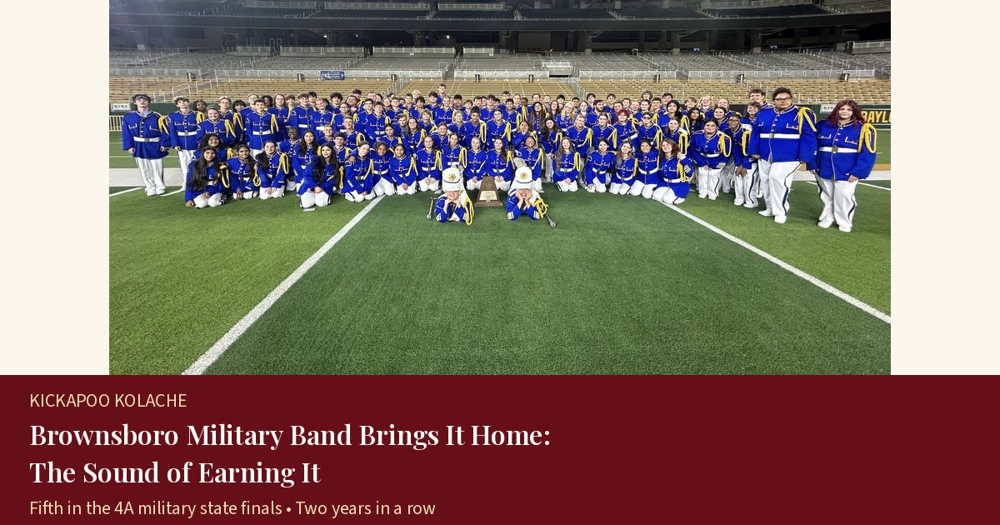

Brownsboro Military Band Brings It Home: The Sound of Earning It
Jake Ham and his students earned a second straight fifth-place finish in the state’s 4A military marching finals, with teamwork and hometown support.
Brownsboro & Chandler. Neighbors first.
Digital Edition · Est. 2026
Every interview and story we've published, newest first.

Jake Ham and his students earned a second straight fifth-place finish in the state’s 4A military marching finals, with teamwork and hometown support.
From a painter's van to the president's chair, Chris Owens has found his calling in rolling up his sleeves for the little town he loves.
Council Member Bob Valliere on building on the work of those who came before, and why Chandler is still a city with a heart.
For 13 years, Sherry Parker and a team of volunteers have quietly sent food home with Brownsboro ISD students every week, and they’d love your help.
In 1845, a band of Norwegian pioneers put down roots just outside today’s Brownsboro. One of them carved gravestones by hand for the little colony’s cemetery.
Texas State Parks Director Rodney Franklin shares the timeline, the planning work under way, and how Brownsboro and Chandler neighbors can get involved.
Every day, his mission is to bring joy into the lives of others.
Hay rides, corn pits and plenty of pumpkins draw families to Brownsboro
Quilter, mom of nine and Brownsboro Chamber chairwoman, Morgan is busy reviving the hometown traditions she grew up loving.
Most towns Chandler’s size don’t have a museum at all. Chandler has one with two buildings, and the simple reason is a group of sweet ladies, plus other volunteers, laboring in love.
Vendors, students, families and a whole lot of volunteers filled Winchester Park for the Chandler Chamber of Commerce’s biggest day of the year.
Rick Ford and the Chandler EDC helped a development of around 50 acres with a heart-shaped lake clear two years of studies. Plus: the Pow Wow is this Saturday.
The Pollard family’s land on Lake Palestine, about 650 acres of pines, pecans and lakefront, is on its way to becoming a Texas state park. Where it is, what it could offer and when it might open.
Brownsboro’s Carlee Burgess joined fellow Civil Air Patrol cadets and VFW Post 1799 to lay 28 worn flags to rest.
Kayla Goodson would rather point you to her neighbors than talk about herself, so this story is about the people who quietly give, serve and show up, and the community spirit she hopes to keep alive.
About two months into the youth minister role at West Lake Baptist Church, Bro. Palmer talks about teaching life skills to Empower Christian Academy students, midweek school visits, and preparing students before they leave The Dock student ministry.
A year and a half after coming home to East Texas, Rock Hill Baptist Church’s lead pastor talks about two campuses, a church outgrowing its space, and why faithfulness and people come first.
No stories match that search. Try a different name or town, or .
Know a neighbor we should talk to? Send an interview tip